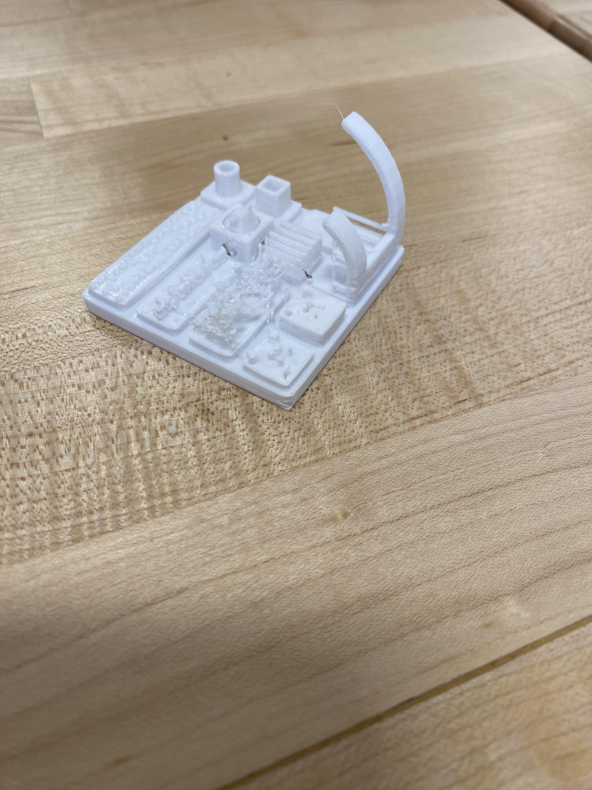
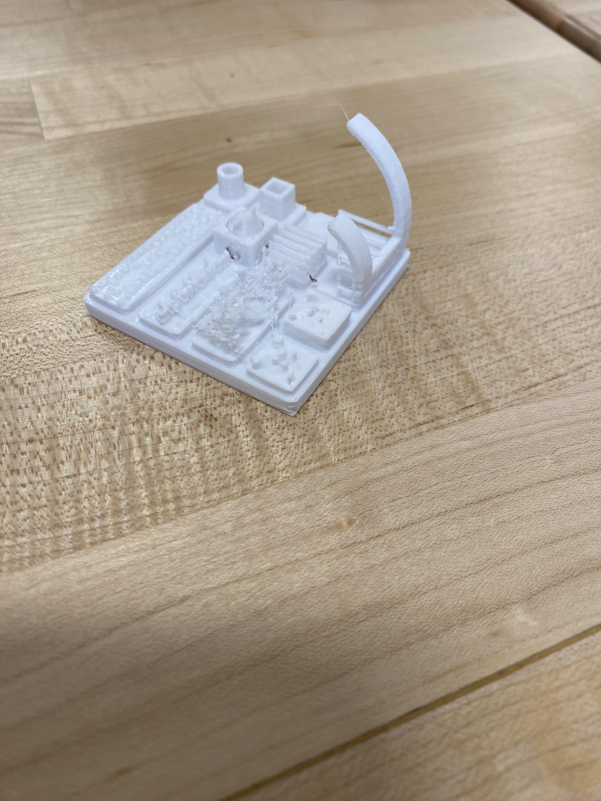
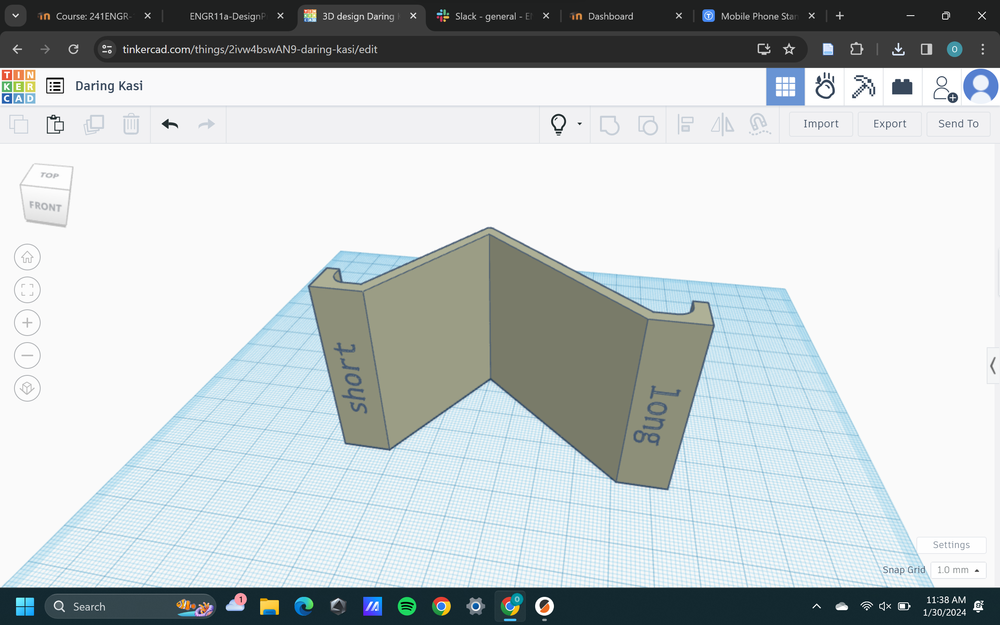
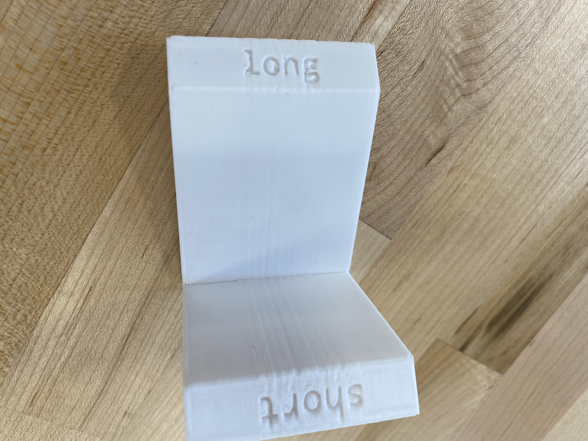
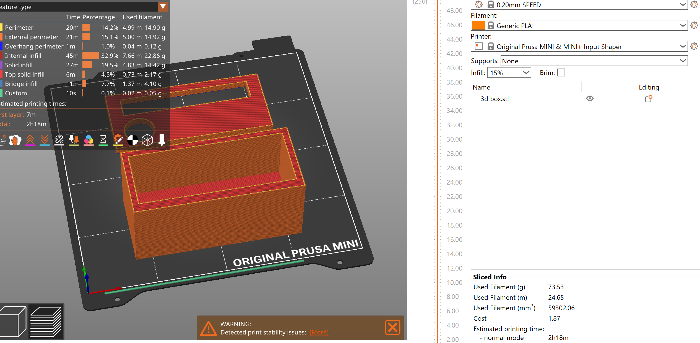
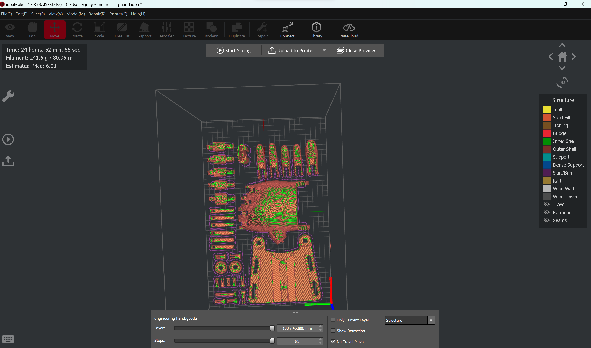
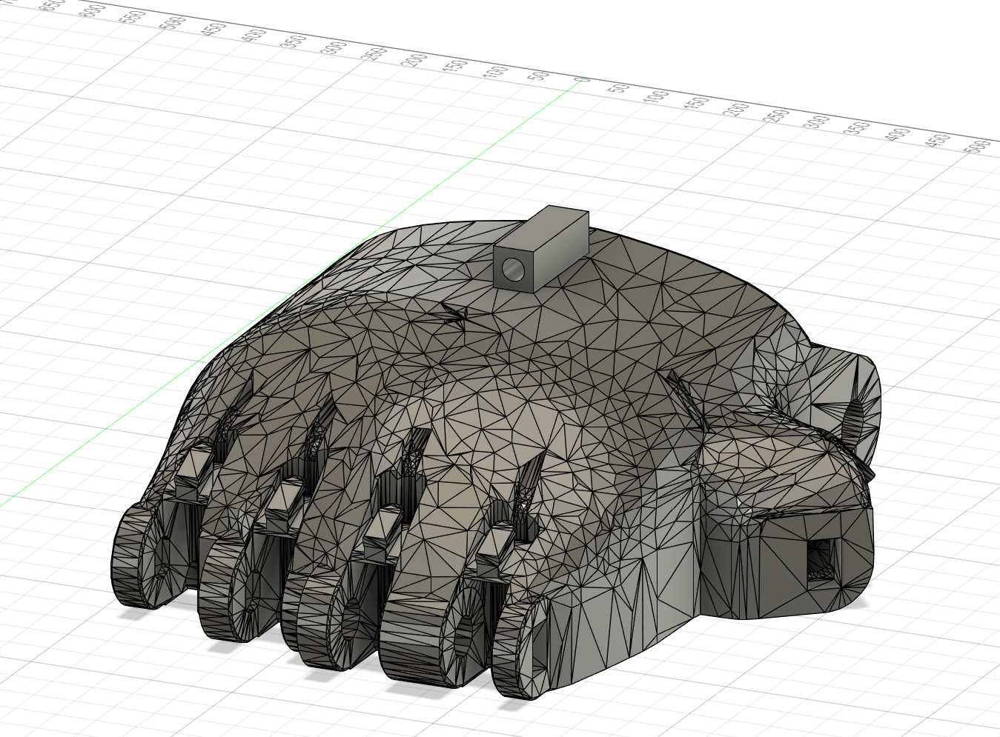
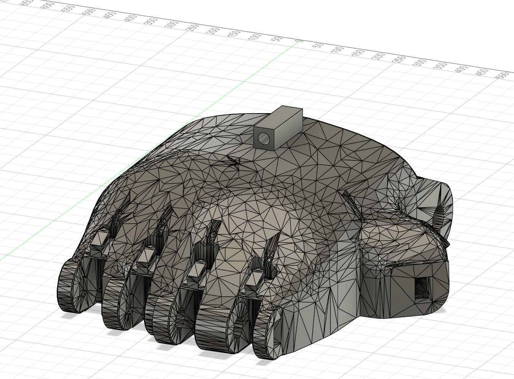
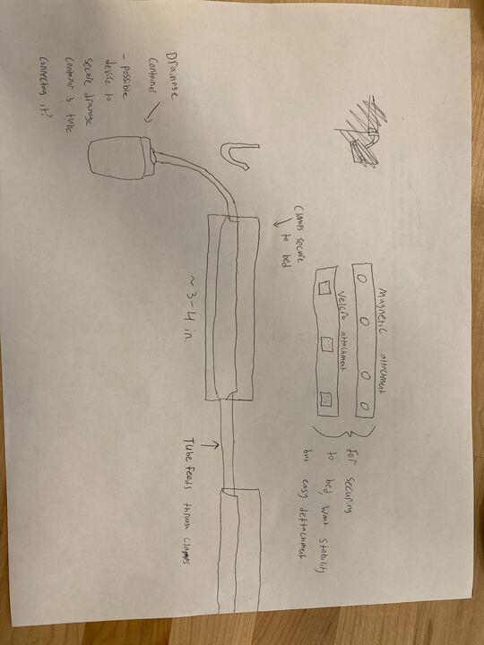

Owen's Project Page
Graphic Artist - Web Designer - Illustrator
Graphic Artist - Web Designer - Illustrator
.jpg)


First I downloaded the file containing the design, and imported it to the prusa slicer. Next I edited the name parts so it would say my name and changed the font style. Once this was done, I clicked the slice now button and uploaded it to the flashdrive. However, I forgot to change my filament type so when I tried to print, it failed and I had to redo it while changing the filament type. Once the design was ready, I went back to the printer and started to heat it up. I had some trouble loading the filament all the way in, but the professor showed me how to do it and you just really need to make sure it’s feeding into it right and that it is all the way in. From there forward, the print process went pretty smoothly. When I had to switch the filament midway, I made sure that the old filament was fully unloaded before reloading the new one. I almost messed up and didn’t have the filament all the way in, but I noticed nothing was coming out and was able to pause it and fix it before continuing. Once it finished, I took the bed off and then picked it up off the bed, clipped off a few stringy pieces and was done.  My second print was of a stress test. It ended up a bit small so it was hard to make out all of the parts where it failed, but even with the small size you can still see them. The first thing I noticed was that there was a lot of stringing between parts of the print. It happened mainly between the two high curved parts, which may indicate that having two tall parts go up separately may cause this. It also sort of occurred in one spot but in a different way where you can’t tell what it was supposed to be before (probably because it was so fine and so many individual things). This partially suggests that if the size of your print is too small, then you lose some precision for fine details. The oozing happens because the filament continues to go out just slightly as the nozzle moves between the parts, but you can combat this with the setting known as retraction. This will make the nozzle pull the filament back inside as it moves between parts of the print.

Another thing I noticed was that there were gaps between the outline and the infill. If the printer prints the infill too fast, then it won’t give it enough time to melt onto the outline. This suggests that a limit of the printer is also speed. It needs to be going slow enough that it gives the filament proper time to form into the position it is supposed to be in. In the print, there are also instances of gaps in the top layer. On the little citadel looking part, if you look closely you will see that there are small gaps where the printer did not fill it in all the way. I think this is partially due to the size of the print (once again) but also suggests that it may be too thin since it is hollow on the inside. Part of the reason these errors occurred could be due to the file type. If the file is .stl, then you may encounter more errors since that file type is older and focuses more on the shapes of the print. However, .3mf files encounter less errors since it is a newer file type and focuses on minimizing the errors that occur during the printing process. 3mf also contains many more details like colors, assembly process, and other important information.
My second print was of a stress test. It ended up a bit small so it was hard to make out all of the parts where it failed, but even with the small size you can still see them. The first thing I noticed was that there was a lot of stringing between parts of the print. It happened mainly between the two high curved parts, which may indicate that having two tall parts go up separately may cause this. It also sort of occurred in one spot but in a different way where you can’t tell what it was supposed to be before (probably because it was so fine and so many individual things). This partially suggests that if the size of your print is too small, then you lose some precision for fine details. The oozing happens because the filament continues to go out just slightly as the nozzle moves between the parts, but you can combat this with the setting known as retraction. This will make the nozzle pull the filament back inside as it moves between parts of the print.

Another thing I noticed was that there were gaps between the outline and the infill. If the printer prints the infill too fast, then it won’t give it enough time to melt onto the outline. This suggests that a limit of the printer is also speed. It needs to be going slow enough that it gives the filament proper time to form into the position it is supposed to be in. In the print, there are also instances of gaps in the top layer. On the little citadel looking part, if you look closely you will see that there are small gaps where the printer did not fill it in all the way. I think this is partially due to the size of the print (once again) but also suggests that it may be too thin since it is hollow on the inside. Part of the reason these errors occurred could be due to the file type. If the file is .stl, then you may encounter more errors since that file type is older and focuses more on the shapes of the print. However, .3mf files encounter less errors since it is a newer file type and focuses on minimizing the errors that occur during the printing process. 3mf also contains many more details like colors, assembly process, and other important information.
.jpg)
For project two, I had to remix a public model by adding some new part or feature. I decided to remix a phone stand. For my initial design, I used thingiverse. When thinking about a design, I made sure to choose one that would be stable on different kinds of surfaces, which led me to select the design I did. The design felt the most stable and the most simple to print which is why I chose it. Linked below is the original design: https://www.thingiverse.com/thing:4599475 Next, I needed to add a feature or part. For this I chose to do lettering to label which side was for which way of holding your phone. To do this, I first uploaded the design into tinkercad. I created two text pieces, and made them say “long” and “short” respectively. Next I turned them sideways, because the print was sideways, and began to adjust the positioning to line up with the bottom of the base (really one of the sides from how it was standing).  I tried to get it mostly center and equal on both sides. I wasn’t very precise, but just wanted to make sure it looked good to the naked eye. Once I got the letters in the right position, I turned it into a whole and began to slide it slightly into the base of the design. I had to make the letters a whole so that it would indent, but also be sure to not slide it in too far that they would penetrate all the way through the base. After this was done, I exported the file to prusa, sliced it, and printed.  The first print turned out pretty well. There were no major issues, and the lettering came out decently clear. There was some errors around where the letters where, but it was all on the bottom and made no real difference. The biggest problem was that the stand was a little too small to fully hold my phone in it. That led me to my second design which I used fusion to create. For the second fusion design, I decided to use my initial design but to increase the width between the upwards slanting parts and the ends of the holder parts for the phone. I ran into trouble with this, and had to try a few different ways. At first, I created a design by basically going forward cutting off the ends of the stand and saving them as components so that I could then go back in the timeline of my edits and add them in after creating rectangualar extensions for each stand so it would be big enough. I went back and forth doing this using mesh plane cuts until it looked how I needed it to be. When I tried to export to prusa, it went alright until I tried to slice it. When I tired to slice it, it would only have the two poles (the extensions I added) and then a little bit of filament from the middle of one of the ends. I tried to work through this in several different ways since I wasn’t sure what was wrong with my design. My first thought was that maybe parts of it were mesh and parts were body. I tried experimenting and turning everything to mesh then body but this didn’t work. I also tried deleting the later edits, which had been used to extract the ends to be reattached. It turned out that I had fully deleted my middle bridge part at some point which is why it wouldn’t work. At this point I had two options, I could either keep trying to save this design or I could measure my dimensions and try to start designing it from scratch. I ended up choosing the second option because while I would lose a lot of my work, I felt it was worth it since I felt confident whatever I created would work and slice where as I didn’t know that for the other option. From there, I quickly jumped into creating my new design. I first used the measure tool to get the length of all my sides, as well as the angles of parts and such. As I did this, I created a brand new sketch of my design, keeping track of the lengths ofI do think that there was some error
For project 3, we were tasked with soldering a kit and then creating an enclosure for it using a 3D printer and a laser cutter. We had to design our own enclosure while making sure that they followed specific parameters that were outlined in the project goals and guidelines. The purpose behind this project was to introduce us to soldering as well as laser cutting. It was also the first project where we worked in groups. To begin the project, we were first each given an electronics kit to assemble. The kit consisted of a circuit board and various pieces including LED lights and a microphone. The goal was that if done correctly, the LEDs would light up if the microphone detected noise. First, we each had to solder the electronics kit. Learning to solder was one of my favorite parts of the project. This involved putting the pieces into their spot on the board, then taking metal wiring and heating it up so it would melt on, and putting just enough that it would hold the part in place but not too much where it would be too clunky. After I attached the part, I would use a snipping tool to remove the unnecessary pieces of metal either from the leds or that was from the soldering. One important thing for this was I had to make sure I did not burn the wiring that was on the board, since it could peel off and then the kit wouldn’t work anymore. The next part of the project was to design the 3D print of the box and then print it. We started by taking the measurements of our finished electronics kits so we would know how big the dimensions of the box needed to be. I measured it to be 38mm x 100mm. The box for 3D-printing was pretty simple. It had a bottom, 4 side walls, and then a top with a rectangular opening and a circular opening. We chose this design because it was simple and met the requirement of being able to have openings for both the mic and the lights, while allowing for the battery to be swapped out. One improvement on it could be to make a way for it to attach securely to the box.  Next up, I sliced and printed the design on the PrusaMini. The design was successful, so it was time to move to the laser cutting portion of the project. For this, we had to follow a youtube tutorial teaching us how to design this specific box design in the laser cutting program. This part was a little more difficult for me. I spent a lot of time trying to design the box, but when I would try to get the grooves in the sides for the walls to connect, it would keep auto formatting it weird. It took me a while to work through this design challenge. However, once I was able to get some help and keep retrying, I was able to successfully design the box. Then came laser cutting the box. Compared to designing it, this part was much easier. One of the benefits of laser cutting is that it can really quickly produce 2-dimensional designs, which was perfect for the box. It got the box printed out pretty fast and without problem. In summary, project 3 provided a comprehensive introduction to soldering and laser cutting, while also fostering collaboration through group work and reinforcing 3D-printing skills. Soldering the electronics kit was a highlight of the project for me. Designing the 3D-printed box required careful consideration of dimensions and functionality, leading to a simple yet effective design. Overcoming challenges in the laser cutting portion emphasized the value of perseverance and seeking assistance when needed. Through this project, not only did we gain practical skills in fabrication techniques, but we also learned the importance of problem-solving and teamwork in achieving our goals.
For project 4, we were tasked with scaling up a 3D enable phoenix hand V3 by 150% and then printing and assembling the hand. We also had to remix the hand and design and create it in CAD.
For this project, my partner and I first found the prosthetic hand design online, and put it into ideamaker. We scaled it up successfully, however we ran into our first obstacle here. There was issues with making sure every piece of the print fit onto the build plate because otherwise the machine would have been trying to print with nothing below it. Even though there was a function to automatically organize the pieces so they would all fit, it wasn’t working so we manually had to adjust this. Once we did this, we prepared to print it but none of the Raise printers were open so we had to switch the design to Prusa to print on the Prusa minis.

We had to individually import each file piece by piece. However, we ran into the issue of just not having enough space on the print bed. In order to get the print out, we split up the parts and use multiple prints to run it simultaneously. However, when we came back for the next class to assemble the hand, it turned out that our print had failed so we had to redo the print. Redoing the print didn’t take too much extra effort, but it set us behind a bit. We had to get an extension because there wasn’t enough time in class for the prints to complete and us to be able to assemble the hand. However, this time the prints ran smoothly and finished successfully.
After we had our prints finished, it was time to put the prosthetic together. This part went smoothly. My partner had experience already with putting together hands, so he took the lead and helped us to make up for the time that we lost due to our prints’ initial failures. In the assembly process, we didn’t run into issues like we did before.
 While all this was going on, we also had to work on designing and then creating with CAD a modified version of the prosthetic. Me and my partner met to discuss our idea, and created initial sketches together. Tried to think about tasks that may be more difficult with the prosthetic hand and ways to compensate for the weaknesses in the design. We decided on a pencil holder, because the way you hold a pencil is an odd motion that doesn’t work as well with a hand that only opens and shuts.
For our initial design, we created a holder that would rest on top of the hand to allow for the pencil to slide in there and be taken out relatively easily. It can also be sort of used to write with too without even needing to hold in the hand. To do this, we took the measurements of the pencil and used that to create the holder. It worked pretty well, but ultimately was too simple so we decided to add more to it. We played around with adding supports to it (which would’ve been unnecessary) but ended up deciding to add an eraser holder on top to give them more features. This design turned out better, and still didn’t really compromise the design much in terms of structural integrity or size.

Project 4 was a good introduction to prosthetics, enable, and designing things in order to address a certain issue. It helped to lay down the groundwork for our fifth and final project, where we have to find a problem and design something to help address a specific part of said problem. It also was nice to be able to get more experience in printing parts of things, and then using other resources to make it come together into something much larger and more functional.
While all this was going on, we also had to work on designing and then creating with CAD a modified version of the prosthetic. Me and my partner met to discuss our idea, and created initial sketches together. Tried to think about tasks that may be more difficult with the prosthetic hand and ways to compensate for the weaknesses in the design. We decided on a pencil holder, because the way you hold a pencil is an odd motion that doesn’t work as well with a hand that only opens and shuts.
For our initial design, we created a holder that would rest on top of the hand to allow for the pencil to slide in there and be taken out relatively easily. It can also be sort of used to write with too without even needing to hold in the hand. To do this, we took the measurements of the pencil and used that to create the holder. It worked pretty well, but ultimately was too simple so we decided to add more to it. We played around with adding supports to it (which would’ve been unnecessary) but ended up deciding to add an eraser holder on top to give them more features. This design turned out better, and still didn’t really compromise the design much in terms of structural integrity or size.

Project 4 was a good introduction to prosthetics, enable, and designing things in order to address a certain issue. It helped to lay down the groundwork for our fifth and final project, where we have to find a problem and design something to help address a specific part of said problem. It also was nice to be able to get more experience in printing parts of things, and then using other resources to make it come together into something much larger and more functional.
For the final project, our goal is to address the issue of tube kinking and tangling that occurs with ostomy bags. When the tubing connecting the ostomy bag to its night drainage container kinks or tangles, it can lead to backup and subsequently cause nausea and vomiting in patients relying on the device. Typically, individuals with an ostomy bag carry a "pouch" during the day to assist with the process. However, our focus is on the night drainage container, where tube tangling is a concern that users do not need to worry about. According to the NIH, between 725,000 to 1 million people are affected and require the use of an ostomy bag. For this issue, the main existing solutions primarily focus on the port. They try to make sure the port does not leak, and neglect the tube and preventing tangling. There are some solutions out there that address it, but they don’t really fully solve the problem. One solution is to slide the tube down one’s pant leg, to prevent the tangling. However, this issue doesn’t fix the overall issue. Having a tube run down your leg can be inconvenient and uncomfortable, as well as can increase the risk of kinking if you accidentally get on top of it. The profile of a customer who would use this is someone who uses an ostomy bag daily and specifically the drainage tube at night. Daily, these people have to deal with managing their tubes, draining their pouches, and more. At night, they have to make sure the tubing doesn’t kink or get tangled. To address this problem, we came up with a few different ideas. There were two main concepts. One was with long hooks to support the tubing, and velcro on the back so that it could connect onto a piece that would be put on the bed. There was another variation of this design but instead of using velcro, it would use magnets. Our second main idea was to use more short hooks to support the tubing at several points. This also had the magnet and velcro variations. There weren’t many preexisting ideas to address this, so it felt like we were starting from scratch.  Some of the key features our design had were the velcro points and the brackets. The velcro points were crucial because they functioned as the main way to support the tubing, since it would attach to the bed and use that to support the tubing. The bracket was also very important, since it was the piece that actually held and accomplished the function of our design. The bracket’s job is to hold the tube relatively straight so it won’t kink or tangle, and keep it out of the way so the user doesn’t need to worry about their tube draining well. Success of our design is evaluated by how well it holds the tubing, the flow of the liquid, and ease of use. Based on how well it works in each iteration, we will continue to make changes until we reach a level of functionality and ease that we think meets the needs of the user. In the team meeting we held, we discussed a few important things for our project moving forward. The biggest was that we would no longer be working for a client. We also talked about how we will shift our focus to a more general sense instead of meeting one client’s specific needs. In doing this, we also flushed out our team roles more so that we had clearer ideas of everyone’s responsibilities. In the meeting, we also talked about some ways we could move forward with our design. The possible goals of it were immobilizing the tube, letting the tube move freely but within a limited range, preventing bunching, anchoring the waste depository, and using two movable anchor points so it could be moved freely but also be secured when necessary. We started with a client, they decided that they were no longer interested. This caused minor complications just because it meant we had to take a step back and reevaluate what direction we were going in (since we couldn’t use the client as a guide). We are still working on the same general problem but without a specific intended client with the intent of releasing our solution as an open-source hardware with a guide. This would allow us to still try to solve the same overall problem, but in a way that allows for easy access for many different people so that they can be empowered to make their lives easier.
For project 6, our goal was to begin to focus on an issue and iterate designs to address this issue. We started by creating a needs statement. What does our design need to address in order to be effective and useful for the user? What we arrived at was that ostomy patients need a way to better manage their night drainage tubing. It needs to prevent tangling and backflow to prevent nausea and related other symptoms to attain a better night’s sleep.
From this needs statement, we were some key features to add to our design to address some issues we saw. One of the first things we needed it to do was support the tubing. We wanted to make sure that the tube wouldn’t be tanlged but also wouldn’t have any kinking. The supports were designed to guide it along the flow path to while preventing this. They also had to keep the liquid moving along a path where there would be no pooling inside the tube, which could cause blockage or potential backflow. Another element our design needed that went hand in hand with that was supports on the bed. We wanted to try to make the tubing relatively immobile, so that it wouldn’t get in the users way and would stay in a good position once it was put there. For this, we tried implementing velcro and magnets to attach the supports to the bed. Another need we identified was comfortability. Since this was a key feature of our idea, if it didn’t accomplish this there wasn’t much point. We tried to make the design unnintrusive on the user so that they could be as comfortable as a person without a night drainage tube.
 In the design, you can see how we made many of these elements come to life. We added holes in the back for the magnets to attach to the bed. We moved away from the velcro design since while it was effective, we found the magnets were easier to attach and detach while still allowing for quality adhesion to the bed. For the supports on the tube, we made two variations depending on tube size. Both gave some wiggle room for the tube to move around within it, but kept it relatively immobile and flat so none of the previously mentioned issues would occur.
To test our prototype, we had to figure out how to simulate flowing through a night drainage tube without using a test subject with an ostomy and night drainage tube. We filled a water bottle with water and had the water flow from a high point down to a low point. We evaluated the test’s success by seeing how much leakage there was while also observing the flow. We also tried to see how much the clips prevented actual kinks and tangles. Our initial tests without water were successful, but when we tried the two pulley design we had it failed.
From these initial tests, we found our design was pretty solid but needed some more refinement. We first focused on the creation method with the printers. The next thing we did was print our prototypes in PLA at 15% infill. Along with this, we also printed in PETG at 15%. We also added on a pulley piece that would increase the surface area of the tube in contact with the support. The PETG iteration came out alright, but the PLA one did not fit the tube and ended up snapping too. From this, we decided to increase the infill to 25% so that structure would be stronger, and also slightly scaled up one design to have two pulleys. This allowed it to support the tube properly while also actually being able to fit the tube inside.
In the design, you can see how we made many of these elements come to life. We added holes in the back for the magnets to attach to the bed. We moved away from the velcro design since while it was effective, we found the magnets were easier to attach and detach while still allowing for quality adhesion to the bed. For the supports on the tube, we made two variations depending on tube size. Both gave some wiggle room for the tube to move around within it, but kept it relatively immobile and flat so none of the previously mentioned issues would occur.
To test our prototype, we had to figure out how to simulate flowing through a night drainage tube without using a test subject with an ostomy and night drainage tube. We filled a water bottle with water and had the water flow from a high point down to a low point. We evaluated the test’s success by seeing how much leakage there was while also observing the flow. We also tried to see how much the clips prevented actual kinks and tangles. Our initial tests without water were successful, but when we tried the two pulley design we had it failed.
From these initial tests, we found our design was pretty solid but needed some more refinement. We first focused on the creation method with the printers. The next thing we did was print our prototypes in PLA at 15% infill. Along with this, we also printed in PETG at 15%. We also added on a pulley piece that would increase the surface area of the tube in contact with the support. The PETG iteration came out alright, but the PLA one did not fit the tube and ended up snapping too. From this, we decided to increase the infill to 25% so that structure would be stronger, and also slightly scaled up one design to have two pulleys. This allowed it to support the tube properly while also actually being able to fit the tube inside.
 In project 6, the team focused on prototyping a design to address night tube management for ostomy patients. We identified key features for their design, including supports for the tubing to prevent tangling and backflow, supports on the bed for stability, and a focus on comfort. Through iterative design, we implemented features such as magnets for attachment, experimented with variations in support design to accommodate tube size, and adjustments to printing parameters for strength and fit. Testing involved simulating fluid flow and observing leakage and functionality. From these tests and designs, refinements such as increased infill and additional pulleys led to a stronger design. Through testing and experimentation, the group was able to make a lot of improvements and progress on the design.
In project 6, the team focused on prototyping a design to address night tube management for ostomy patients. We identified key features for their design, including supports for the tubing to prevent tangling and backflow, supports on the bed for stability, and a focus on comfort. Through iterative design, we implemented features such as magnets for attachment, experimented with variations in support design to accommodate tube size, and adjustments to printing parameters for strength and fit. Testing involved simulating fluid flow and observing leakage and functionality. From these tests and designs, refinements such as increased infill and additional pulleys led to a stronger design. Through testing and experimentation, the group was able to make a lot of improvements and progress on the design.